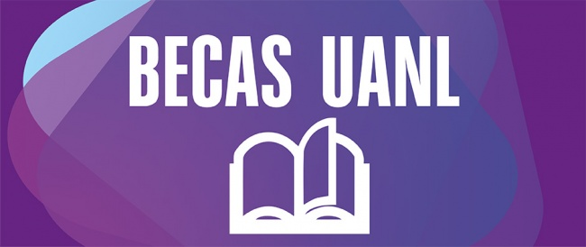

Beca 1 · Universidad
Beca de escasos recursos UANL
Apoyo para estudiantes cuya familia tiene un ingreso total que no pasa de cinco salarios mínimos.
Beneficio
Apoyo en el pago de las cuotas escolares, de acuerdo con la situación económica de la familia.
Requisitos
- Llenar la solicitud de beca en SIASE.
- Acta de nacimiento del estudiante.
- Comprobante de domicilio.
- Comprobantes de ingresos de padres o tutores.
- No pagar el recibo de servicios escolares hasta terminar el trámite.
Cómo solicitarla
En línea, desde el menú Becas de SIASE.
Ver requisitos en uanl.mx